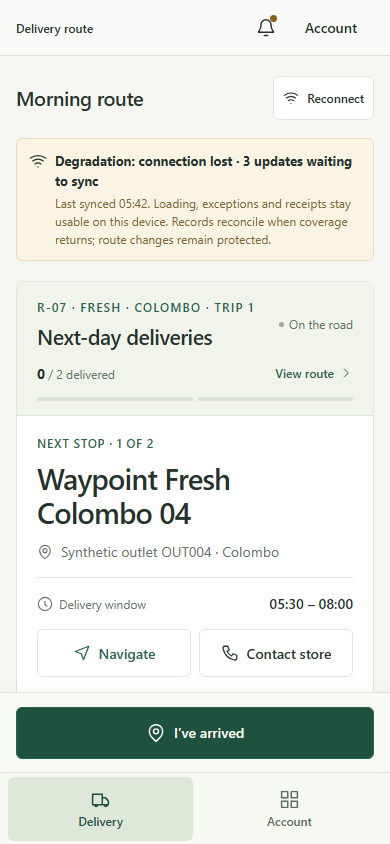
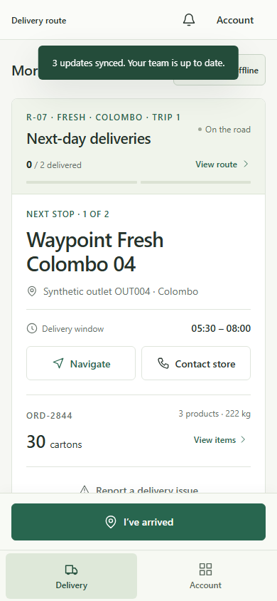

What remains usable
- Current route and next stop
- Arrival recording
- Delivery exceptions
- Receipt details and carton checks
- Loading and issue actions in the Loader view
A driver loses mobile connectivity while executing the route. The work cannot disappear, and the route cannot become ambiguous.
Mobile coverage can drop across hill country, the Kandy corridor, and rural districts. The driver still needs to record arrivals, exceptions, carton checks, and proof of delivery while safely stopped. Relay keeps those actions available in its simulated local state, identifies what is waiting to synchronize, and preserves outstanding stops.
The degraded state is visible without replacing the driver's current stop. Connectivity changes the status of the record, not the driver's ability to understand the route.

The prototype adds recorded actions to its local pending array while offline. The exact item count updates as the driver works.
Dispatch route changes remain unavailable while offline. Relay does not suggest that a remote plan can be safely changed without connectivity.

The offline banner disappears, the pending count returns to zero, and a confirmation message states that queued updates were synchronized in the demo workspace.
The current route and stop remain in place. Recovery does not force the driver into another screen or hide remaining work.
Relay stores its state in localStorage and clears a simulated pending array on reconnect. It does not implement a backend queue, service worker, cross-device reconciliation, conflict handling, retries, or production data durability.
The Challenge Booklet requires work away from the depot to remain usable offline and records to reconcile when connectivity returns.
The driver is already away from the planning office and warehouse. Losing a connection should not erase the route context, prevent a safely stopped driver from recording the delivery, or make an outstanding stop look complete.
Arrival, exception, and POD information later becomes useful to Store and Dispatch. The degraded state makes clear that the record is local and pending before other roles can rely on it.
The prototype keeps field actions available but protects route changes. It does not imply that every planning action is safe without a connection.
A count that returns to zero and a specific recovery message give the driver a clear endpoint. Outstanding deliveries still remain visible after reconnection.
Grounded in the implemented Driver and Loader workspaces and the official Challenge Booklet connectivity requirement.